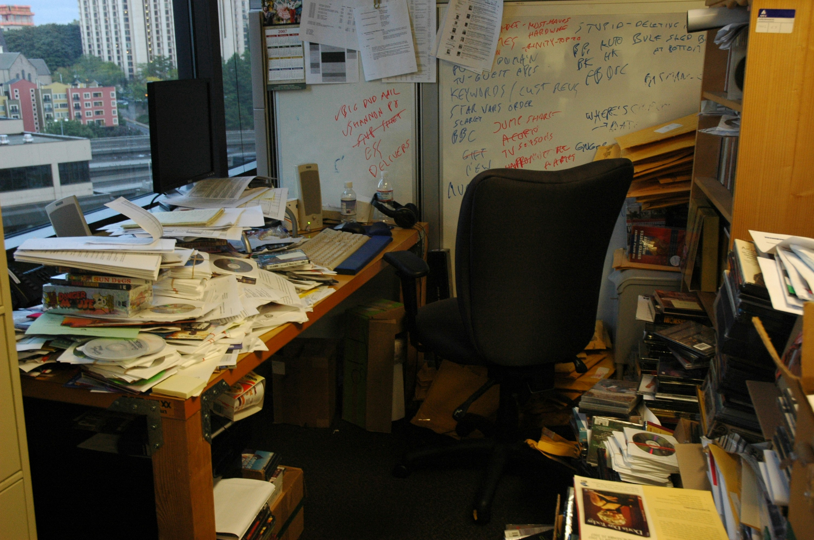

Your Developer Left. Now What? (Emergency Recovery Guide)
It's Friday afternoon. Your developer—the one who built and maintains your core business system—just quit. Or they stopped responding to calls. Or they sent a resignation email effective immediately.
The system is running. Orders are processing. But you suddenly realize: nobody else knows how it works. No documentation. No handover. Just a system that the business depends on, and the only person who understands it is gone.
This is more common than businesses want to admit. It's a crisis, but it's a manageable crisis if you take the right steps immediately. Here's your emergency recovery guide.
First 24 Hours: Secure What You Have
Before trying to understand the system or find replacement help, secure access and assets. This is time-critical—do it immediately.
Action 1: Secure All Access Credentials
You need every login, password, and access credential for:
- Server administrator accounts
- Database passwords
- Hosting provider logins
- Domain registrar access
- Email service credentials
- Third-party API keys
- Source code repository access (GitHub, GitLab, etc.)
- Cloud service accounts (Azure, AWS, etc.)
- SSL certificate management
- Payment gateway credentials
If the departed developer maintained these credentials personally, you need them documented NOW before relations sour or access gets lost.
Pro tip: If the developer is still reachable and departure is amicable, getting credential handover should be your absolute first priority. Offer to pay for a handover session if necessary—it's worth every ringgit.
Action 2: Change Administrator Passwords
Once you have credentials documented, change all administrator passwords immediately. This isn't about not trusting the developer—it's standard security practice during personnel transitions.
Priority order:
- Hosting/server admin access
- Database root passwords
- Domain registrar access
- Email admin accounts
- Repository admin access
Action 3: Locate and Secure Source Code
Where is the actual code? Common locations:
- GitHub/GitLab repositories (check if account is personal or company-owned)
- On the server itself (not ideal, but common)
- Developer's personal computer (problematic if you've lost contact)
- Company network drives
- Backup services
If code is in a repository under the developer's personal account, you need to fork/transfer ownership immediately. If it's only on their personal computer, this becomes urgent negotiation.
Critical: If you can't locate source code within 48 hours, assume it's gone and plan accordingly. Don't spend weeks trying to recover code that might not exist in accessible form.
Action 4: Document Current System State
Before anything changes, document everything about how the system is currently running:
- What URLs/domains the system uses
- Where it's hosted (which servers, which hosting provider)
- What databases it uses
- What external services it depends on (payment gateways, email, SMS, etc.)
- Current version or release information if visible
- Any scheduled tasks or background jobs you're aware of
- Recent backup dates (if visible)
- Any error messages or issues currently present
Take screenshots of admin panels, server dashboards, database interfaces—anything that shows current configuration.
Action 5: Verify Backup Status
Find out if backups exist and when they last ran successfully:
- Database backups (when was last backup, where are they stored)
- File/code backups
- Server snapshots or images
- Backup automation status
If backups haven't been running, or if you can't verify they exist, create manual backups immediately (or hire someone to do this urgently).
Days 2-7: Assess What You Actually Have
Now that you've secured access and assets, assess the situation realistically.
Question 1: Do You Have the Source Code?
If YES: Recovery is manageable. You can hire a replacement developer to learn the system, even without documentation.
If NO: You're in emergency mode. Without source code, any bugs that emerge can't be fixed, any changes are impossible, and system failure becomes a question of when, not if.
Question 2: Do You Have Database Access?
Can you access the database directly? This is critical because:
- Database contains all your business data
- You can extract data even if application code is lost
- Backups are only useful if you can restore them
If you can't access the database, this is top priority for your emergency tech hire.
Question 3: Is Documentation Available?
Look for any documentation the developer might have left:
- README files in code repositories
- Design documents or specifications
- Email conversations about how things work
- Comments in the code itself
- Setup instructions
- API documentation
Even incomplete documentation is valuable. Treat anything you find as precious—it'll save significant time for whoever takes over.
Question 4: What External Dependencies Exist?
Identify what external services the system depends on:
- Payment gateways
- SMS providers
- Email services
- Mapping/location services
- Third-party APIs
- Authentication services
You need to maintain access to all of these. If credentials are lost or in developer's personal name, migration becomes urgent.
Question 5: What's the Technology Stack?
Try to identify what technologies the system uses:
- Programming language (.NET, PHP, Node.js, Python, etc.)
- Database type (SQL Server, MySQL, PostgreSQL, etc.)
- Web server (IIS, Apache, Nginx)
- Framework (if identifiable)
- Operating system
This information is crucial for hiring replacement expertise—.NET developers are different from PHP developers.
Weeks 2-4: Find Emergency Support
You need technical support quickly, but the type depends on your situation.
Scenario A: You Have Code and Database Access
What you need: Developer with experience in your technology stack who can learn unfamiliar codebases.
Timeline: 2-4 weeks to hire and onboard a capable developer. They'll need 2-4 additional weeks to become productive in the system.
Interim strategy: Operate conservatively. Avoid system changes. Document any issues that emerge. Have an emergency contact for critical problems (freelancer or consultancy on standby).
Scenario B: You Have Code but No Documentation
What you need: Senior developer experienced in code archaeology—someone comfortable reverse-engineering systems.
Timeline: 4-8 weeks for a senior developer to understand undocumented systems well enough to make safe changes.
Cost consideration: Senior developers cost 50-100% more than juniors, but trying to save money with inexperienced developers on undocumented systems usually backfires.
Scenario C: You Don't Have Source Code
What you need: Emergency decision on system future, plus someone who can keep things running short-term while you decide.
Your options:
- Negotiate code recovery: If developer is reachable, pay whatever it takes to get source code. This is almost always cheaper than alternatives.
- Attempt code recovery: If code might exist on servers or backups, hire someone to search for it.
- Run until it breaks: Operate the system as-is until something fails critically, then migrate to new system. Risky but sometimes only option.
- Emergency replacement: Start building/buying replacement system immediately. Budget 3-6 months and RM 30,000-100,000+ depending on complexity.
Where to Find Emergency Help
Places to look for emergency technical support:
- Specialized consultancies: Firms that handle legacy systems and emergency support (like SteadyDevs). More expensive but faster response.
- Freelancer platforms: Upwork, Freelancer.com for urgent contracts. Vet carefully—you need experienced developers, not cheap ones.
- Local tech communities: LinkedIn, tech meetups, developer groups. Sometimes experienced developers take side projects.
- Former colleagues of departed developer: If developer worked with others previously, those people may understand similar technology.
- Hosting provider support: Some hosting companies offer emergency technical support or can recommend specialists.
Red flag: Anyone who promises they can fix everything without first assessing the system. Legitimate developers will want to understand what they're inheriting before committing to solutions.
Months 2-6: Stabilize and Document
Once you have emergency support in place, focus on stabilization and preventing this from happening again.
Priority 1: Create System Documentation
Work with your new developer to document:
- System architecture (what components exist, how they connect)
- Deployment process (how to release updates)
- Backup and recovery procedures
- Common troubleshooting steps
- External service configurations
- Database schema documentation
- User management and permissions
- Critical business logic explanations
This doesn't need to be perfect. Even rough notes dramatically reduce risk if another transition happens.
Priority 2: Implement Proper Backups
If backups were inadequate or uncertain, fix this immediately:
- Automated daily database backups
- Weekly full system backups
- Off-site backup storage
- Regular backup restoration tests (to verify backups actually work)
- Documented backup and restore procedures
Priority 3: Transfer Critical Assets to Company Control
Ensure all critical technical assets are owned by the company, not individuals:
- Domain names registered to company
- Code repositories under company accounts
- Hosting accounts in company name
- SSL certificates managed by company
- API accounts and keys owned by company
- Shared credential management (password manager accessible to multiple people)
Priority 4: Create Redundancy
Don't create another single point of failure:
- Have at least two people with system knowledge
- Maintain relationships with consultancies for emergency backup
- Document everything so knowledge isn't trapped in one person's head
- Consider team setups instead of sole developers for critical systems
The Longer-Term Decision: Maintain or Replace?
After stabilizing, you face a strategic question: continue maintaining the inherited system, or replace it?
Continue Maintaining If:
- You successfully recovered source code
- System is fundamentally sound architecturally
- New developer can work with the codebase
- Business logic is complex and would be expensive to rebuild
- System meets current needs adequately
Budget for documentation improvement, technical debt reduction, and gradual modernization.
Consider Replacement If:
- Source code is permanently lost
- Technology is obsolete with no maintenance path
- System is so poorly built that maintenance is impractical
- Business has outgrown system capabilities
- Ongoing maintenance costs approach replacement costs
Budget 6-12 months and RM 50,000-200,000+ for replacement depending on complexity.
Prevention: How to Avoid This Crisis
If you're reading this before crisis hits, here's how to prevent developer departure from becoming emergency:
- Maintain documentation: Require ongoing documentation as part of development work
- Company-owned assets: All accounts, repositories, domains in company name from day one
- Regular knowledge sharing: At least one other person should understand system basics
- Verified backups: Regular backup tests confirm you can actually restore
- Succession planning: Know how you'd replace critical technical staff before you need to
- Avoid sole-developer dependency: For critical systems, team approaches reduce risk
- Contractual protection: Development contracts should specify code ownership, handover requirements
The Bottom Line
Developer departure doesn't have to be catastrophic, but it becomes catastrophic when you don't have source code, credentials, documentation, or backups.
If you're in this crisis now: secure everything within 48 hours, assess what you have within a week, find emergency support within a month. It's fixable, but speed matters.
If you're not in crisis yet: implement the prevention measures now. The time to prepare for developer transition is before it happens, not during the emergency.
Most businesses experience this at least once. The ones that recover quickly are the ones who act decisively in the first 72 hours.
Need Emergency Recovery Support?
If your developer just left and you're facing system crisis, SteadyDevs provides emergency assessment and recovery services for legacy .NET systems. We can help you secure assets, assess what you have, and create a recovery plan.
Get Emergency HelpFrequently Asked Questions
Legal options exist but are slow. Practical approach: negotiate payment for handover first. If that fails and system is critical, consult lawyer about employment contracts and intellectual property clauses. Simultaneously, plan for system replacement assuming you won't recover code.
Emergency rates are typically 50-100% higher than standard development rates. For Malaysia: expect RM 150-300/hour for experienced emergency support, or RM 5,000-15,000 for initial assessment and stabilization projects. This is expensive but cheaper than system failure.
Sometimes. Compiled code (like .NET DLLs) can be partially decompiled but won't match original source exactly. Source code files might exist on the server. A technical specialist can assess what's recoverable, but don't assume recovery is possible until verified.
Not long-term. You can run a system without source code until something breaks, but you can't fix bugs or make changes. Treat it as temporary while planning replacement. Timeline depends on system criticality—weeks to months maximum.
Company-owned code repositories, documented credentials in password manager, regular system documentation, at least one other person with basic knowledge, clear employment contracts specifying code ownership. Also consider consultant relationships instead of sole in-house developers for critical systems.